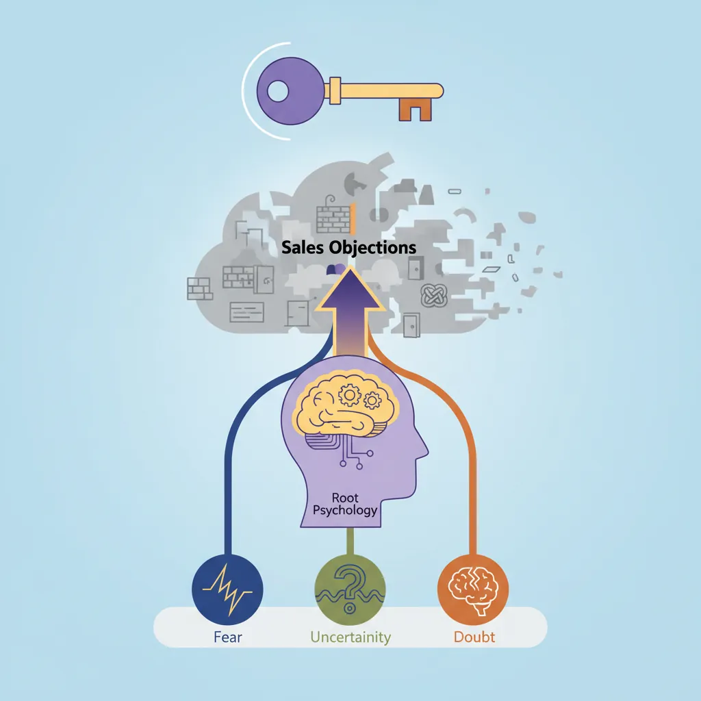
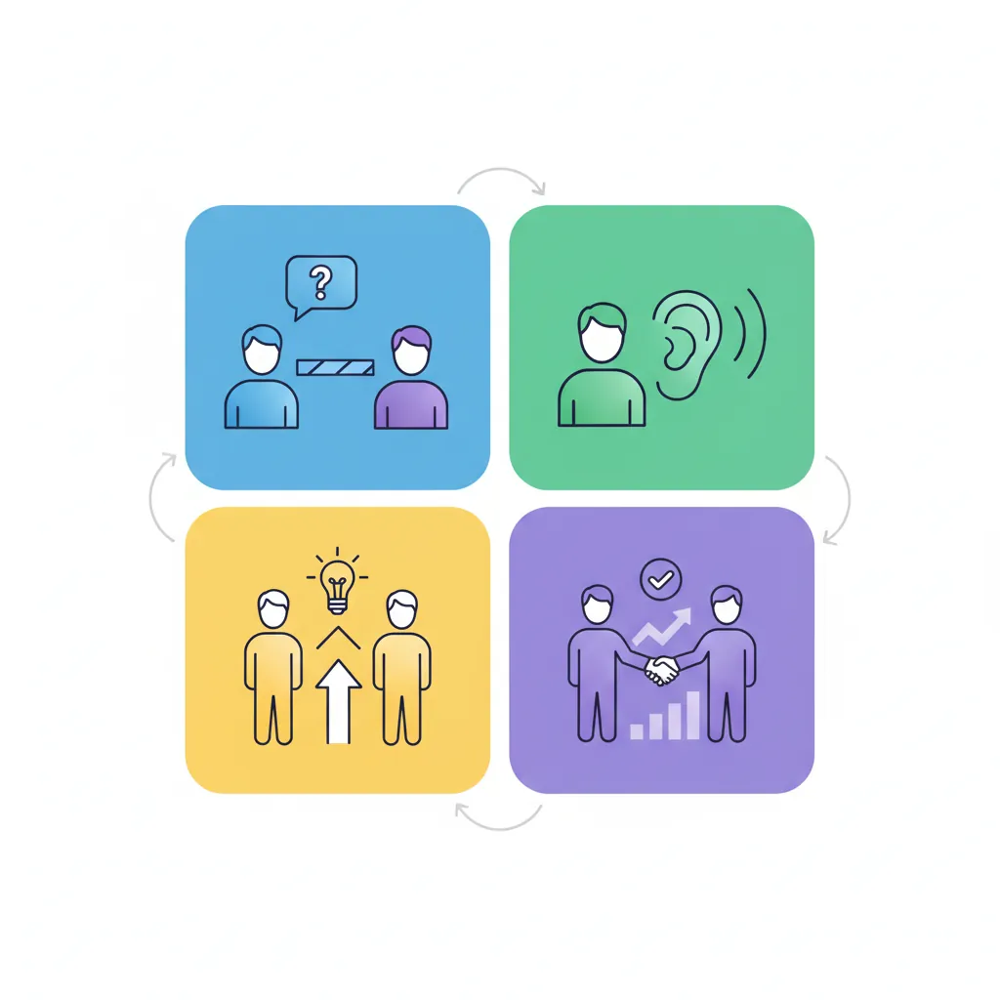
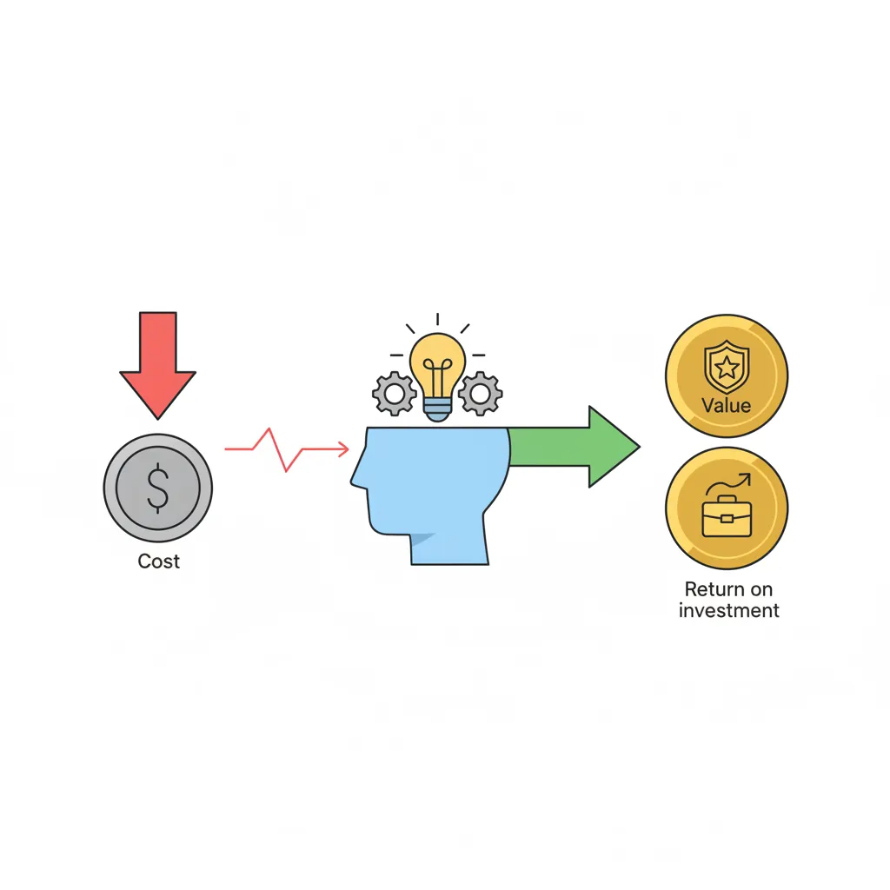
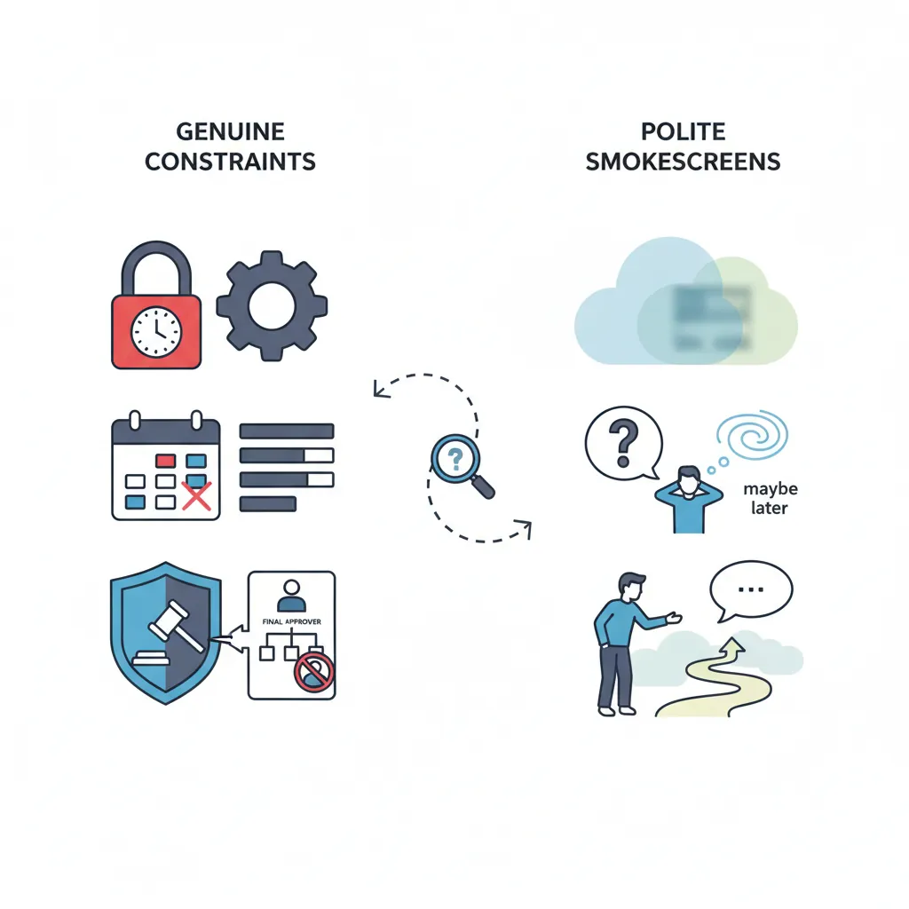
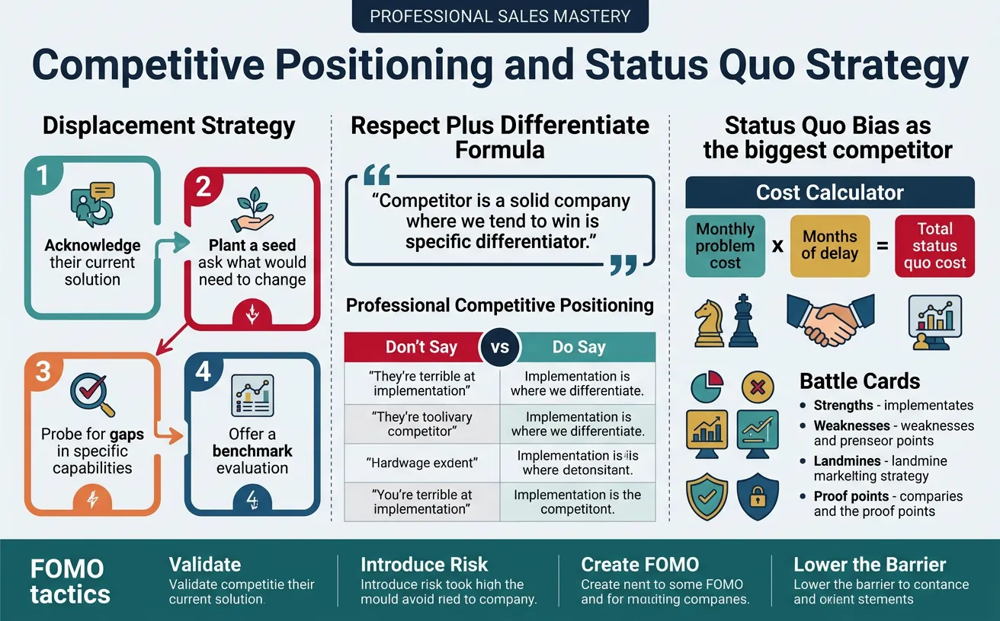

We use cookies to enhance your browsing experience, serve personalized content, and analyze our traffic.
By clicking "Accept All", you consent to our use of cookies. See our
Privacy Policy
for more information.
Part 6 of 18: Building on messaging from Part 5, this article teaches you how to handle the objections that arise during sales conversations and turn them into opportunities.
Objections aren't roadblocks—they're signposts. Every objection reveals what matters to the buyer and what's preventing them from moving forward. Master objection handling, and you'll turn resistance into momentum.

Every sales objection stems from fear, uncertainty, or doubt — addressing the root psychology is key
The Psychology of Objections
Objections stem from three root causes: fear (of making the wrong decision), uncertainty (about the solution or outcome), and doubt (about you, your company, or the fit). Your job is to address the underlying psychology, not just the surface statement.
Why Objections Are Actually Good
Engagement signal: A buyer who objects is still engaged. Silence is far worse than pushback.
Discovery opportunity: Objections reveal hidden concerns you can address.
Buying intent: Objections often mean they're seriously considering—they're just not ready yet.
Competitive advantage: How you handle objections differentiates you from competitors who fumble them.
Categorizing Objection Types
Not all objections are created equal. Understanding the type helps you choose the right response.
Objection Taxonomy
Type
What It Sounds Like
What It Really Means
Real Objection
"Our budget is locked until Q3."
Genuine constraint—needs creative solution.
Smokescreen
"We're too busy right now."
Hiding the real concern—dig deeper.
Value Objection
"It's too expensive."
Value isn't clear enough yet.
Feature Objection
"Does it integrate with X?"
Specific capability question—often solvable.
Trust Objection
"We've never heard of your company."
Need more social proof and credibility.
Status Quo
"We're happy with our current vendor."
Change resistance—need compelling reason.
Real vs. Smokescreen Objections
The first step in handling any objection is determining if it's real (a genuine constraint) or a smokescreen (a polite way to avoid saying "no" or hide the true concern).
Test for Smokescreens
The "If I Could" Test: "If I could [solve this objection], would we be able to move forward?"
If they hesitate or bring up another objection, the first one was likely a smokescreen. Keep digging.
Mental Frameworks for Handling
Use structured frameworks to handle objections consistently. The key is to listen fully, acknowledge, and respond thoughtfully—not defensively.

The LAER framework provides a structured four-step approach to handle any sales objection
LAER Framework
The gold standard for objection handling:
Step
Action
Example
L – Listen
Hear the full objection without interrupting. Let them finish.
(Pause, nod, take notes)
A – Acknowledge
Validate their concern. Show you understand.
"That's a fair concern. Budget timing is a real constraint for many teams."
E – Explore
Ask questions to understand the root cause.
"Help me understand—is it the total amount, the timing, or the approval process?"
R – Respond
Address the real objection with a tailored solution.
"What if we structured this as a Q3 start with monthly payments to fit your cycle?"
Feel-Felt-Found
A classic empathy-based framework:
Feel-Felt-Found Formula
"I understand how you feel..." — Empathize with their concern.
"Others have felt the same way..." — Normalize the concern with social proof.
"What they found was..." — Share the positive outcome after trying.
Example: "I understand how you feel about the implementation timeline. Many of our customers felt the same way initially. What they found was that our dedicated onboarding team cut expected implementation time by 40%."
The Curiosity Approach
Instead of defending, get curious. Ask questions that help the buyer talk through their own objection:
"Can you tell me more about that?"
"What specifically concerns you about [X]?"
"What would need to be true for this to work for you?"
"If you were to move forward, what would be the biggest risk in your mind?"
Price Objections
"It's too expensive" is rarely about the number—it's about the perceived value relative to the investment. Your job is to reframe the conversation from cost to value.

Reframing price objections shifts the conversation from cost to value and return on investment
The Price Objection Truth
When someone says "it's too expensive," they're really saying one of four things: (1) I don't see the value yet, (2) I can't afford it, (3) I'm comparing to cheaper alternatives, or (4) I'm using price as an excuse for another concern. Your response depends on which one it is.
Handling "It's Too Expensive"
Use this progression to diagnose and address price objections:
Price Objection Response Flow
Clarify: "Too expensive compared to what?" or "Help me understand—is it the total amount, the monthly payment, or something else?"
Isolate: "If price weren't a concern, would this solution be the right fit for your needs?"
Quantify the gap: "What budget range were you expecting?"
Reframe to value: "Let's look at this differently. Based on our conversation, you're losing $X per month to [problem]. This investment pays for itself in [Y months]."
Price Objection Response Scripts
Objection
Response
"It's too expensive."
"I appreciate that. Can you help me understand—too expensive compared to what you expected, or compared to another solution you're considering?"
"We don't have the budget."
"Understood. Is this a timing issue—no budget now but possible next quarter—or is this type of investment not typically in your budget?"
"Competitor X is cheaper."
"They often are. What I'm curious about is—beyond price, what factors are most important in your decision? Most clients who choose us find that [specific differentiator] saves them more in the long run."
Budget Constraints
When budget is genuinely constrained, don't discount—find creative solutions that protect your value while meeting their constraints.
Creative Budget Solutions
Phase the rollout: Start with a smaller scope and expand later.
Adjust payment terms: Quarterly instead of annual, or defer start date.
Use different budget sources: "Sometimes this fits in operations budget rather than IT. Have you explored that?"
Pilot programs: Lower-risk entry point that proves value before full commitment.
Remove non-essential components: Modularize the offering to fit their budget.
Discounting Ground Rules
Never discount without getting something: Longer commitment, case study rights, faster decision, referral.
Discount scope, not price: Remove features rather than reducing the per-unit rate.
One discount, one condition: "I can offer 10% if we can close by end of month."
Value Reframing
The most powerful price defense is value framing. When the value is clear, price becomes secondary.
Value Reframing Techniques
Technique
How to Use It
Example
ROI Framing
Calculate return on investment explicitly.
"At $50K investment delivering $200K in savings, that's a 4x return in year one."
Cost of Inaction
Quantify what they lose by not acting.
"Every month you delay costs you approximately $15K in lost productivity."
Daily/Hourly Breakdown
Make the cost feel smaller.
"That's less than $5 per employee per day—less than a coffee."
Total Cost of Ownership
Compare full costs including hidden expenses.
"Competitor X looks cheaper upfront, but when you add implementation, training, and support fees, the 3-year TCO is actually higher."
Timing & Authority
Timing and authority objections are often gatekeepers to the real decision. "Now's not a good time" and "I need to run this by my boss" can be genuine or smokescreens—your job is to navigate them skillfully.

Distinguishing genuine timing and authority constraints from polite smokescreens
Timing Objections
When buyers say "not now," they're usually saying one of three things:
Timing Objection Decoder
What They Say
What They Mean
Response Strategy
"We're too busy right now."
This isn't a priority (or smokescreen).
Create urgency by quantifying cost of delay.
"We have a big project launching first."
Genuine competing priority.
Offer to align with their timeline, schedule for post-launch.
"Let's revisit next quarter."
Delaying decision (may or may not be real).
Nail down specific date and what needs to change by then.
Creating Urgency Without Pressure
Urgency should come from the buyer's situation, not artificial deadlines.
Cost of delay: "Based on our calculations, every month you wait costs approximately $X in [lost revenue/productivity/risk exposure]."
Competitive timing: "Your competitors are already moving on this. What would it mean if they launch before you?"
Implementation timeline: "To hit your Q4 goals, we'd need to start implementation by [date]."
Limited availability: (Only if true) "Our implementation team is booking into next quarter. If timing matters, I'd recommend securing your slot."
The Future Date Test
"If we were to reconnect next quarter, what specifically would need to be different for this to be a priority?" This question reveals whether there's a genuine path forward or if "next quarter" is a polite no.
Need to Talk to Someone
Authority objections signal you may not be talking to the decision-maker—or that internal alignment is incomplete.
Authority Objection Response Flow
Clarify the process: "Totally understand. Can you walk me through how decisions like this typically get made?"
Understand their role: "What role do you play in the decision? Are you making a recommendation?"
Offer to help: "What information would help you make the strongest case to [decision-maker]?"
Propose a meeting: "Would it be helpful if I joined your conversation to answer any technical questions directly?"
Champion Coaching
When you can't meet the decision-maker directly, coach your champion to sell internally:
Champion Enablement Checklist
Give them the business case: Provide ROI calculations, comparison data, and key talking points.
Anticipate objections: "When you present this, [CFO name] might ask about [X]. Here's how I'd suggest addressing that..."
Create shareable materials: Executive summary, one-pager, or brief deck they can forward.
Offer to be on call: "If questions come up in your meeting, text me—I can jump on the phone."
Stakeholder Navigation
Complex deals involve multiple stakeholders with different priorities. Objections often arise from stakeholder misalignment.
Demo focused on ease of use, training plan, change management support.
Procurement
"We need three bids."
Position as strategic partnership, provide competitive comparison, streamline paperwork.
The Hidden Blocker
Watch for the stakeholder who hasn't engaged but has veto power. Ask: "Is there anyone else who would need to be comfortable with this decision before you could move forward?" Identify blockers early.
Competition & Status Quo
Competitive objections aren't about bashing competitors—they're about positioning your unique value. And the biggest competitor of all? The status quo.

Professional competitive positioning focuses on differentiation rather than attacking competitors
"We Already Have a Solution"
This objection means they're working with a competitor or have an internal solution. Your goal isn't to attack their current solution—it's to introduce doubt and create curiosity.
Displacement Strategy
Acknowledge: "That makes sense. Most of our customers came from [competitor/internal solution] too."
Plant a seed: "Out of curiosity, what would need to change for you to consider alternatives?"
Probe for gaps: "How well is it handling [specific capability or trend]?"
Offer a benchmark: "Many teams evaluate us alongside their current solution just to benchmark. Would that be valuable?"
Competitor Comparison
Never badmouth competitors directly. It makes you look unprofessional and desperate. Instead, position with class.
Professional Competitive Positioning
Don't Say
Do Say
"They're terrible at implementation."
"Implementation is where we really differentiate. Our average time-to-value is 30% faster."
"Their product is buggy."
"Reliability is a top priority for us. Here's our uptime SLA and how we enforce it."
"They're too expensive."
"Our pricing model is designed for transparency—no hidden fees or surprise charges."
The "Respect + Differentiate" Formula
"[Competitor] is a solid company. Where we tend to win is [specific differentiator]. For companies that prioritize [X], we're often the better fit." This approach is confident without being negative.
Competitive Battle Cards
Build internal battle cards for your top competitors with:
Their strengths: Know what they do well (so you can acknowledge it).
Their weaknesses: Areas where you have a genuine advantage.
Common objections: What prospects say after talking to them.
Landmines: Questions to ask that expose their weaknesses.
Proof points: Case studies of customers who switched from them to you.
Overcoming Status Quo Bias
Status quo bias is the tendency to prefer the current state over change. It's often your biggest competitor—especially for first-time buyers of your category.
The Cost of Staying the Same
Most buyers underestimate the cost of inaction. Help them see it clearly.
Status Quo Cost Calculator
Formula: Monthly problem cost × Months of delay = Total status quo cost
Example: "You mentioned you're losing about 10 hours per week to manual reporting. That's $5,000/month in analyst time. Every quarter you delay costs $15,000—more than our annual subscription."
Handling "We'll Just Keep Doing What We're Doing"
Validate: "That's always an option. What would need to change for this to become a priority?"
Introduce risk: "What's the risk of continuing as-is while [industry trend/competitor move/regulation] accelerates?"
Create FOMO: "Your peers at [similar company] made this move 6 months ago. They're now [specific result]."
Lower the barrier: "What if you could test this with zero risk? We offer a 30-day pilot with full rollback support."
Objection Handling Playbook Canvas
Build your personalized objection playbook for the objections you face most often. Export as Word, Excel, PDF, or PowerPoint to train your team.
Objection Playbook Builder
Document common objections and your proven responses. Great for team training and onboarding.
Draft auto-saved
All data stays in your browser. Nothing is sent to or stored on any server.
Exercises
Exercise 1: LAER Role-Play30 minutes
Objective: Practice the LAER framework with a partner.
Partner throws a common objection at you (use the list above or from your real experience).